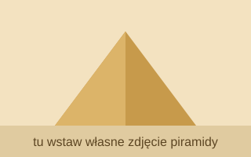

Piramidy w Gizie to zespół historycznych budowli obejmujący dwie największe piramidy Egiptu. Najwyższa z nich, piramida Cheopsa, ma 147 metrów, piramida Chefrena 137 metrów, a piramida Mykerinosa 65 metrów. Wszystkie trzy stoją obok siebie, na skraju pustyni, niedaleko Kairu.
Strona organizatora Olimpiady Informatycznej (nowa karta)

| Piramidy w Gizie | |
|---|---|
| Nazwa piramidy | Wysokość |
| Cheopsa | 147 metrów |
| Chefrena | 137 metrów |
| Mykerinosa | 65 metrów |